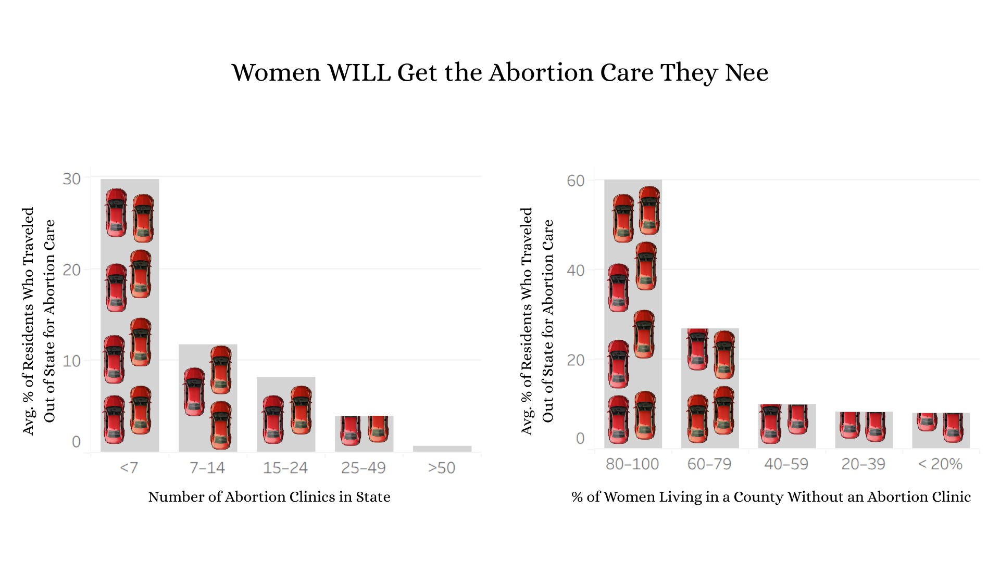
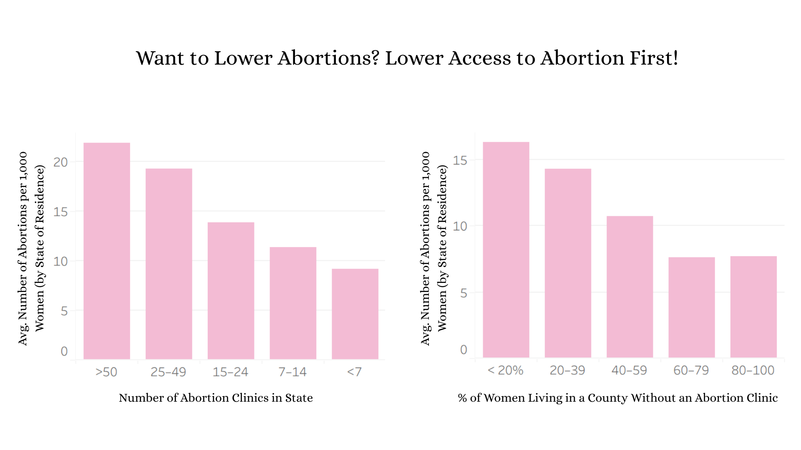

Proposition: No matter how abortion clinic access changes, women will always need abortion care
FOR the Proposition

Design Decisions and Rationale:
- 1. I have 2 graphs, starting with the graph with a poor X-axis measure and a clear trend, and ending with a better X-axis measure and a less clear trend [Score: -0.5] I chose to show 2 graphs side by side to guide the reader. The first one uses the number of abortion clinics, while the second uses % of women in counties without a clinic. I did this so that I can start with a graph that has a very clear upward trend, showing that in places with fewer abortion clinic more people travel for their abortion. However, if people look closer and realize that raw clinic count is not the best measure, they may feel deceived and a bit suspicious. But then in the second graph, they will see a much better measure (with a slightly less clear trend). The better measure will resolve their suspicions, and the persistent upward trend will reinforce the message I wanna make. A con, though, is that this choice requires readers to stay on the graph for longer and pay attention to the measure names, which people might not. I was also considering just keeping one instead of two (most likely the second one, since it’s more earnest); however, I really like that the trend is clearer in the first graph.
- I used custom bin boundaries to strengthen my trend [Score: -1] Rather than using the default bins with equal width, I decided to manually mess with the bin boundaries so that states at potential boundary edges will fall into buckets that better support the overall trend. I think a more honest or neutral alternative would use straightforward buckets with equal gaps. However, I wanted to take advantage of the idea that some differences are more significant than others. For example, 50 versus 80 clinics doesn’t seem as significant compared to 0 versus 30 clinics. With this custom gaps approach, I was able to better manipulate the groupings slightly to make the trend clearer. However, a con, though, would be that once readers recognized the inconsistent bins, they may be more suspicious of the graph.
- I used % of residents traveling out of state instead of using the difference between the number of abortions of women by state of residence - abortion by state of occurrence [Score: 1.5] I made this decision because I think “% Of Residents Obtaining Abortions Who Traveled Out Of State For Care” does a better job of directly measuring what I wanted to show (women feeling like they need to travel to get the abortion care they need). A con, though, is that readers may recognize that states with lower abortion rates may show an inflated travel percentage just because a small number of women actually end up traveling, and be more suspicious of this graph. The alternative calculation also doesn’t make as much sense conceptually. If there are more people who live somewhere getting abortions than the number of abortions actually occurring there, the difference is kind of hard to interpret meaningfully. Also, since I want to highlight how women will need access to abortion through traveling if there’s no local access, I think this metric still ends up being the more useful choice.
- I used averages instead of sums [Score: 1.5] I choose to use averages instead of sums, because I think sums don’t make as much sense with buckets. Some bins may end up with more states than others, which would make those bins seem to have higher numbers even if, on average, the trend isn’t higher. A con is that using averages takes away from each state’s special circumstances and may make the data less detailed. However, I think this is worth it to make the trend clearer for readers. I think this is an earnest decision since average does genuinely does a better job of accurately representing the data, however, I did also ended up sticking with it since it allows the trend to come through more clearly.
AGAINST the Proposition

Design Decisions and Rationale:
- 1. I have 2 graphs, starting with the graph with a poor X-axis measure and a clear trend, and ending with a better X-axis measure and a less clear trend [Score: -0.5] I chose to show 2 graphs side by side to guide the reader. The first one uses the number of abortion clinics, while the second uses % of women in counties without a clinic. I did this so that I can start with a graph that has a very clear upward trend, showing that in places with fewer abortion clinic more people travel for their abortion. However, if people look closer and realize that raw clinic count is not the best measure, they may feel deceived and a bit suspicious. But then in the second graph, they will see a much better measure (with a slightly less clear trend). The better measure will resolve their suspicions, and the persistent upward trend will reinforce the message I wanna make. A con, though, is that this choice requires readers to stay on the graph for longer and pay attention to the measure names, which people might not. I was also considering just keeping one instead of two (most likely the second one, since it’s more earnest); however, I really like that the trend is clearer in the first graph.
- I used custom bin boundaries to strengthen my trend [Score: -1] Rather than using the default bins with equal width, I decided to manually mess with the bin boundaries so that states at potential boundary edges will fall into buckets that better support the overall trend. I think a more honest or neutral alternative would use straightforward buckets with equal gaps. However, I wanted to take advantage of the idea that some differences are more significant than others. For example, 50 versus 80 clinics doesn’t seem as significant compared to 0 versus 30 clinics. With this custom gaps approach, I was able to better manipulate the groupings slightly to make the trend clearer. However, a con, though, would be that once readers recognized the inconsistent bins, they may be more suspicious of the graph.
- I used averages instead of sums [Score: 1.5] I choose to use averages instead of sums, because I think sums don’t make as much sense with buckets. Some bins may end up with more states than others, which would make those bins seem to have higher numbers even if, on average, the trend isn’t higher. A con is that using averages takes away from each state’s special circumstances and may make the data less detailed. However, I think this is worth it to make the trend clearer for readers. I think this is an earnest decision since average does genuinely does a better job of accurately representing the data, however, I did also ended up sticking with it since it allows the trend to come through more clearly.
Final Reflection
I am surprised how difficult I found this whole process. This has made me even more impressed that people have the ability to skew data when they want to. I feel like whenever I had an idea that could work to counter a proposition I came up with, I couldn’t find the actual data to support it. I think working with an existing dataset is much more limiting since you are limited to what the data already exists. I feel like if I could go out to measure new data, it would be a bit easier to get the skewed results I wanted. I had to be a lot more creative and work more carefully with the data given. I found that I was intuitively avoiding more deceptive design choices because it felt a lot more uncomfortable. I wanted to make decisions that I wouldn’t find suspicious myself when I look at a graph. I think “acceptable” persuasive choices are choices that actually show the data in ways that are not clearly manipulative. If things should be highlighted, that is okay, but values and size shouldn’t be purposefully manipulated. It is not ethical to purposefully make a graph that is misleading, becuase then you are actively lying to prove a point. If a point is correct, it shouldn't require active lying